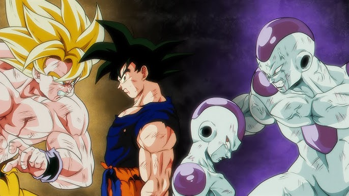
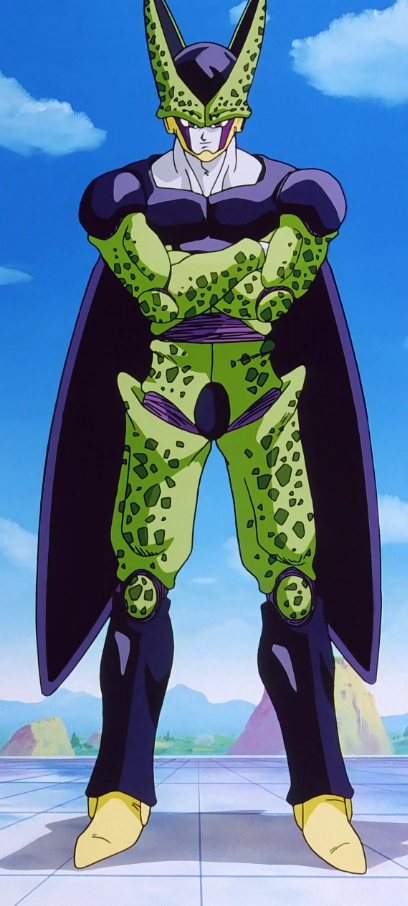
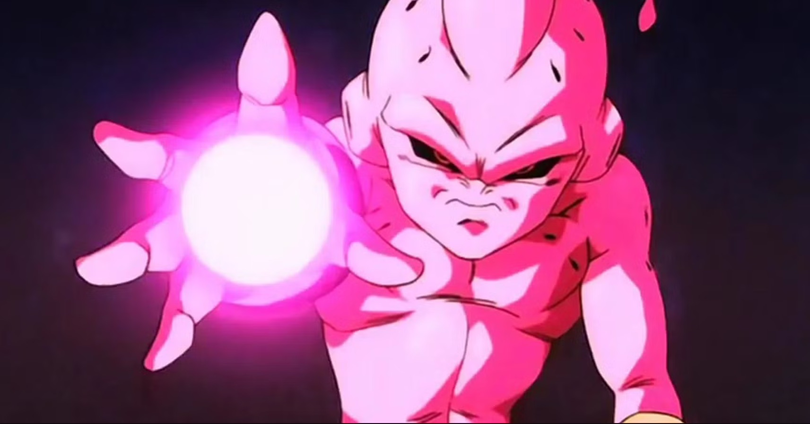

A Saiyan Saga a Dragon Ball Z egyik kulcsfontosságú része, amely a Saiyanok, egy legendás harcos nép történetére összpontosít. A Saiyanok rendkívül erősek, és híresek hódító természetükről. A saga középpontjában áll Goku, aki felfedezi, hogy valójában Saiyan származású.
A saga bemutatja a Saiyanok jellemzőit, mint például az átalakulásukat, amely során még nagyobb erőre tesznek szert. A Saiyanok képesek a harc során folyamatosan fejlődni, ezáltal rendkívül nehezen legyőzhető ellenfelekké válnak. Raditz, Goku bátyja, elsőként érkezik a Földre, hogy felajánlja Gokunak a Saiyan életstílust, de gyorsan konfliktusba kerül Goku barátaival.
A saga során Vegeta, a Saiyan herceg, és Nappa érkezése jelentős fordulatot hoz. Vegeta jellemfejlődése során egyre bonyolultabbá válik, és a sorozat végére a nézők számára megérthetőbbé válik a Saiyanok motivációja és háttere. A Saiyan Saga nemcsak a harcokról szól, hanem a karakterek közötti kapcsolatok, barátságok és áldozatok mélyebb megértését is elősegíti.
Ez a szakasz megalapozza a Saiyanok örökségét a Dragon Ball Z univerzumban, és bemutatja, hogyan válhatnak a karakterek igazi hősökké a kihívásokkal teli harcok során.
Frieza saga

A Frieza Saga a Dragon Ball Z egyik legikonikusabb és legizgalmasabb része, amely a galaktikus hatalom és a harci erő konfliktusára épít. Frieza, a sorozat fő antagonista, a galaxis egyik legfélelmetesebb és legkegyetlenebb uralkodója, aki a Saiyanok elpusztításáért felelős.
A saga középpontjában Goku és barátai állnak, akik a Namek bolygóra utaznak, hogy megtalálják a Dragon Ballokat, és feltámaszthassák barátaikat, akiket a Saiyan Saga során veszítettek el. A Namek bolygó különleges helyszín, hiszen itt találhatók a Dragon Ballok, amelyek képesek teljesíteni kívánságokat.
Frieza érkezése súlyos veszélyt jelent, hiszen ő nemcsak a Dragon Ballokat akarja megszerezni, hanem a hatalmát is meg akarja szerezni. A saga során Frieza brutális módszereivel elpusztítja a Namekieket és harcba száll Gokuval. A harcok során Frieza különböző formákat ölt, hogy fokozza erejét, és minden egyes átalakulása egyre félelmetesebbé teszi.
A saga csúcspontján Goku, miután látja barátai és a Namekiek szenvedését, eléri a legendás Super Saiyan állapotot, amely hatalmas erőre és sebességre teszi képessé. Ez a pillanat nemcsak Goku karakterének csúcsát jelenti, hanem a Saiyanok örökségének fontos szimbóluma is.
A Frieza Saga nemcsak a harcokról és akciókról szól, hanem a barátságról, az önfeláldozásról és a jóságról is. Goku mindig megpróbálja megmenteni azokat, akiket szeret, még akkor is, ha a kihívások óriásiak. Frieza kegyetlensége és Goku bátorsága között feszülő ellentét adja a saga drámai feszültségét.
Összességében a Frieza Saga meghatározó része a Dragon Ball Z történetének, amely nemcsak az akcióra, hanem a karakterek fejlődésére és a mély érzelmi vonalakra is fókuszál. A saga hatása a sorozatra és a nézőkre hosszú távon érezhető, hiszen Frieza karaktere a mai napig emblematikus antagonista maradt az anime világában.
Android & Cell Saga

A Cell Saga a Dragon Ball Z egyik legdrámaibb és legbonyolultabb része, amely a sorozat középpontjába helyezi a bio-humánus Cell-t, aki a tökéletes harcos megteremtésére törekszik. A saga nemcsak izgalmas harcokat, hanem mélyebb karakterfejlődéseket és drámai fordulatokat is tartalmaz.
A saga elején a Z harcosok felfedezik, hogy Cell, aki egy mutáns android, megérkezett a Földre. Cell célja, hogy megszerezze a Z harcosok sejtkódját, hogy elérje a "tökéletes" állapotát. Ehhez a harcosok génjeit használja fel, különösen Gokuét, Vegetáét és Gohanét. A saga bemutatja, hogyan válik Cell egyre erősebbé, miközben az időjárás elől elmenekült Z harcosok próbálnak felkészülni a harcra.
A saga csúcspontja a "Harci Játékok" eseménye, ahol Cell kihívja a Z harcosokat egy sor mérkőzésre. Ez a verseny nemcsak izgalmas összecsapásokat hoz, hanem mély érzelmi pillanatokat is, mivel a harcosok életükért küzdenek, és a gyerekek, különösen Gohan, feljövő erejét is bemutatják.
Gohan, Goku fia, a saga egyik központi karakterévé válik, és a történet során ő felnőtté válik. Az utolsó harcban Gohan eléri a Super Saiyan 2 állapotát, amely során megmutatja a hatalmas erejét és elszántságát Cell legyőzésére. Ez a pillanat nemcsak a harc csúcspontja, hanem Gohan karakterfejlődésének csúcsa is, mivel végre megmutatja, hogy képes megvédeni a családját és a barátait.
A Cell Saga tehát nemcsak akciódús összecsapásokat tartalmaz, hanem a bátorságról, a családról és az önfeláldozásról is szól. A saga végén Cell legyőzése nemcsak a Z harcosok győzelmét jelenti, hanem Gohan fejlődését és a Saiyan örökség folytatását is, amely további izgalmas kalandokat hoz a sorozatban.
Majin Buu Saga

A Buu Saga a Dragon Ball Z utolsó nagy történetszála, amely a sorozat legfokozottabb drámáit és harcait tartalmazza. A saga középpontjában a misztikus Buu áll, egy ősi és rendkívül erőszakos lény, aki képes elpusztítani bolygókat és életformákat.
A saga elején a Z harcosok felfedezik, hogy a Buu szörnyeteg szabadon bocsátódott, és hamarosan szétveri a Földet. Buu különleges képességei közé tartozik az átalakulás és a regeneráció, amely lehetővé teszi számára, hogy szinte lehetetlen legyőzni. A harcosok, beleértve Gokut, Vegetát és Gohan-t, kénytelenek összefogni, hogy megállítsák ezt a szörnyű fenyegetést.
A saga egyik fontos eleme Buu különböző formáinak bemutatása, amelyek mind más-más kihívásokat jelentenek a harcosok számára. A Fat Buu, a főszereplő Buu formája, gyermeki és naiv, míg a Majin Buu, a sötétebb és agresszívebb formája, hihetetlen romboló erejével rémiszti meg a Z harcosokat.
A saga csúcspontja a harc a Super Buu ellen, aki a Z harcosok génjeit használva tovább erősödik. Goku és Vegeta a Fusion Dance segítségével fúzióba lépnek, hogy létrehozzák Vegitát, egy hihetetlenül erős harcost, aki képes megküzdeni Buut. Azonban a harc során Buu még mindig felülkerekedik.
A saga végén Goku, Vegeta és Gohan összefogva képesek a Spirit Bomb segítségével megdönteni Buu hatalmát. A Buu Saga tehát nemcsak a harcokról, hanem a barátságról, az összefogásról és az önfeláldozásról is szól. Goku hite és eltökéltsége, hogy megmentse barátait és a Földet, egy központi téma a történet során.
Összességében a Buu Saga a Dragon Ball Z érzelmi és akciódús csúcspontja, amely bemutatja a karakterek fejlődését, a barátságok erejét és a bátorság fontosságát a legnagyobb kihívásokkal szemben. A saga végén a Z harcosok nemcsak győznek, hanem a barátságuk és az összetartozásuk révén egy új, reményteljes jövőt is építenek.